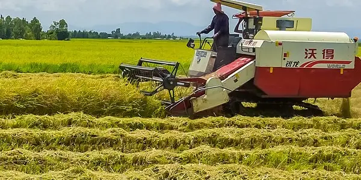
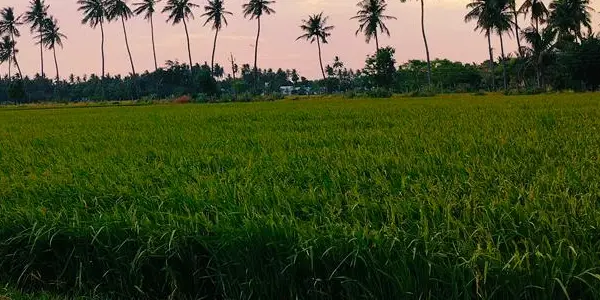
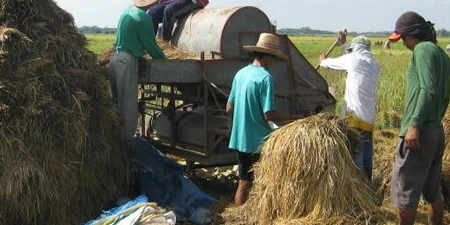

Rice-Growing Areas
Discover Kenya's main rice-growing regions and the conditions that support rice cultivation.
Learn about growing areasExplore Kenya's rice-growing regions, learn how rice is produced, and understand the challenges facing rice farmers.
Explore Rice-Growing AreasRice farming is an important part of Kenya's agricultural sector. Understanding where rice is grown and the challenges farmers face help us appreciate the work behind rice production.

Discover Kenya's main rice-growing regions and the conditions that support rice cultivation.
Learn about growing areas
Learn about land preparation, planting, crop management, and harvesting.
Explore rice production
Understand the production challenges that rice farmers may experience and why they matter.
Explore farming challengesChoose a topic to continue learning about rice farming in Kenya.
Choose a topic and tell us what interests you about rice farming.